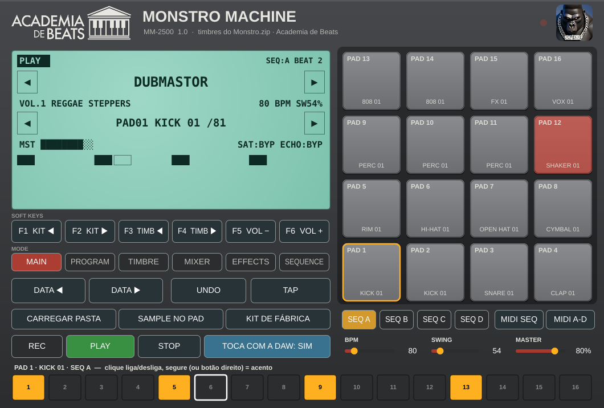
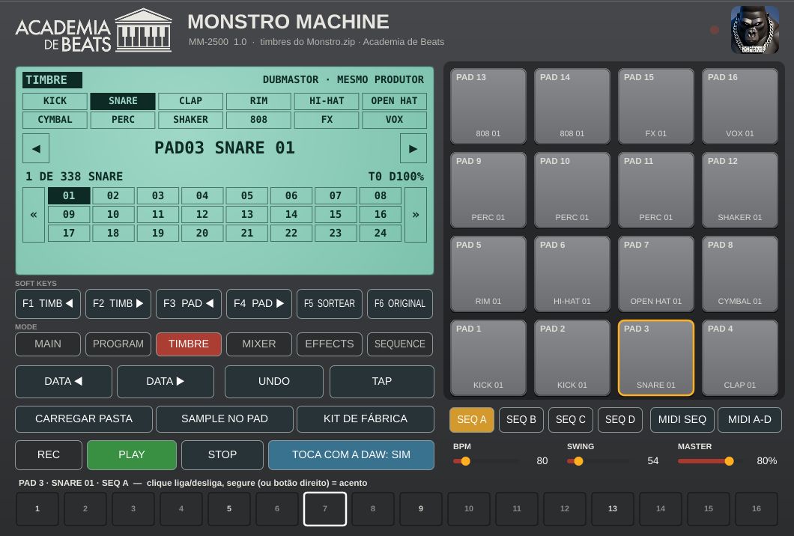

Drum machine no estilo da MPC2500 com os timbres do Monstro.zip, o pack da Academia de Beats: 33 kits de produtores de reggae, trap, boom bap, funk e drill, 16 pads, 4 sequências e o menu clicável da MPC.

Os volumes 1 a 4 do pack, cada kit com o caráter do produtor, o BPM e o groove do estilo dele.
Na tela TIMBRE, o ◀ ▶ troca o som do pad só dentro da família (KICK, SNARE, 808…) e no kit do mesmo produtor.
MAIN, PROGRAM, TIMBRE, MIXER, EFFECTS e SEQUENCE, com as soft keys F1–F6 e o DATA ◀ ▶.
Os sons de fábrica são sintetizados no caráter de cada kit. Para tocar os samples originais, use CARREGAR PASTA com o Monstro.zip descompactado: ela separa os arquivos por família. Também dá para arrastar um arquivo para o pad.
SEQ A a D com acentos, swing e TOCA COM A DAW. Arraste MIDI SEQ ou MIDI A-D para a trilha da DAW.
Na saída, os dois começam em bypass. O eco segue o tempo em passos do sequenciador.
Rode o MM-2500-Windows-Instalador.exe com a DAW fechada. Ele coloca o plugin em C:\Program Files\Common Files\VST3, a pasta onde todas as DAWs procuram. Depois abra a DAW e, se ela pedir, faça uma nova busca de plugins.
Se o Windows mostrar “O Windows protegeu o computador”, clique em Mais informações → Executar assim mesmo.
Abra o MM-2500-macOS-Instalador.pkg. Ele instala o VST3 e o AU em /Library/Audio/Plug-Ins e o app em /Applications/Monstro. Funciona em Mac Intel e Apple Silicon, macOS 10.13 ou mais novo.
Se o Mac bloquear: clique com o botão direito no .pkg → Abrir. No Logic e no GarageBand ela aparece em Instrumentos AU → DubMastor.
O instalador já leva o AAX para a pasta do Pro Tools. O Pro Tools normal só abre plugins AAX assinados pela PACE; enquanto essa assinatura não sai, use o Pro Tools Developer ou a versão VST3/AU em outra DAW.
O instalador também traz o programa Monstro Machine MM-2500, que toca sozinho com a placa de som do computador.
Padrão GM, como na MPC: kick 36 e 35, caixa 38, clap 39, aro 37, hi-hat 42 e 46, crash 49, percussões 63, 64, 62 e 70, 808 34 e 33, FX 55, vox 54.
